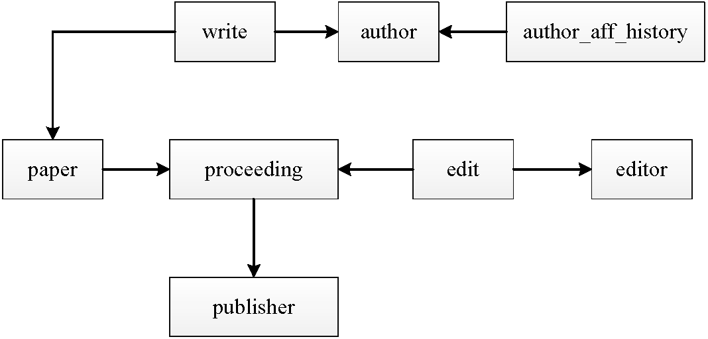
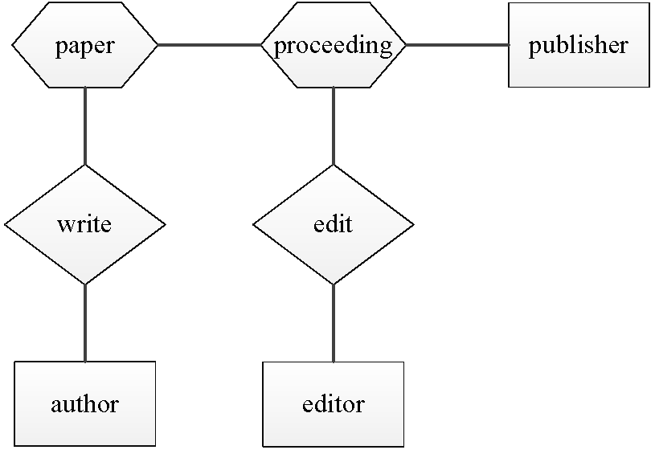
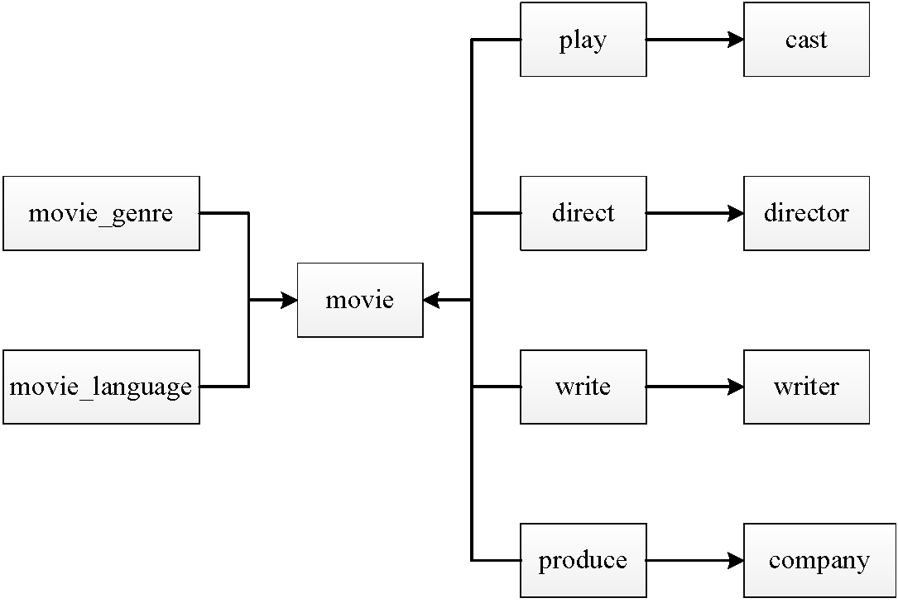
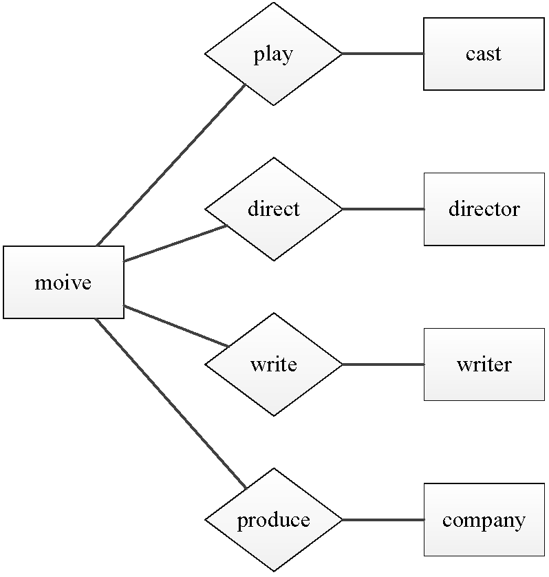
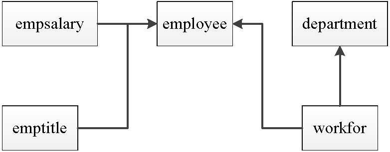

|
3. What can I search in the system?
Three datasets are used for demostration: ACM Digital Library (ACMDL), Internet Movie Database (IMDB) and Employee Sample Database (Employee).
The ACMDL dataset contains information on a subset of conference papers between 1900 and 2011, and their authors, proceedings, editors, publishers, etc. The database schema along with the schema graph and the ORM schema graph are shown as below:
|
paper(paperid, title, keywords, pagefrom, pageto, date, doinumber, url, procid)
author(authorid, name)
author_aff_history(authorid, affiliation)
editor(editorid, name)
proceeding(procid, acronym, title, date, pages, city, country, series, isbn13, publisherid)
publisher(publisherid, code, name, address, city, state, country)
write(authorid, paperid)
edit(editorid, procid)
|
 |
 |
The IMDB dataset contains information on Top 250 highest-rated movies and their cast, directors, companies, etc. The database schema along with the schema graph and the ORM schema graph are shown as below:
|
movie(movieid, title, year, votes, rating, mpaa)
movie_genre(movieid, genre)
movie_language(movieid, language)
cast(castid, name, birthdate, birthplace, biography, remark)
director(directorid, name, birthdate, birthplace, biography, remark)
writer(writerid, name, birthdate, birthplace, biography, remark)
company(companyid, name, country)
play(movieid, castid)
direct(movieid, directorid)
write(movieid, writerid)
produce(movieid, companyid)
|
 |
 |
The Employee dataset contains information on employees who work for and manage departments in a company, and keeps track of the changes of the employees (their salaries and job titles, departments worked for). The database schema along with the schema graph and the ORM schema graph are shown as below:
|
department(deptno, name)
employee(empno, birthdate, name, gender, hiredate)
emptitle(empno, start, title, end)
empsalary(empno, start, salary, end)
workfor(empno, deptno, start, end)
|
 |
|
For those who want to save the effort issuing a query, we list some sample queries for three databases as follows:
ACMDL database
IMDB database
Employee database
For those who want to have a try and issue your own query, we list the information of some movies in IMDB and some employees in Employee as follows:
IMDB database
| title |
year |
votes |
rating |
genre |
language |
company |
director |
writer |
cast |
| The Dark Knight |
2008 |
726635 |
8.9 |
Action
Crime
Drama
Thriller |
English
Mandarin |
Warner Bros. Pictures
DC Comics
Legendary Pictures
Syncopy |
Christopher Nolan |
David S. Goyer
Bob Kane
Christopher Nolan
Jonathan Nolan |
Christian Bale
Michael Caine
Heath Ledger
Morgan Freeman
Aaron Eckhart |
| The Avengers |
2012 |
266270 |
8.6 |
Action
Sci-Fi
Thriller |
English
Russian |
Paramount Pictures
Marvel Studios |
Joss Whedon |
Jack Kirby
Stan Lee
Zak Penn
Joss Whedon |
Robert Downey Jr.
Chris Evans
Mark Ruffalo
Chris Hemsworth
Scarlett Johansson |
| Forrest Gump |
1994 |
503704 |
8.7 |
Drama
Romance |
English |
Paramount Pictures |
Robert Zemeckis |
Winston Groom
Eric Roth |
Tom Hanks
Rebecca Williams
Sally Field
Michael Conner Humphreys
Harold G. Herthum |
| Saving Private Ryan |
1998 |
408820 |
8.5 |
Action
Drama
War |
Czech
English
French
German |
Paramount Pictures
Amblin Entertainment
DreamWorks SKG
Mutual Film Company
Mark Gordon Productions |
Steven Spielberg |
Robert Rodat |
Tom Hanks
Tom Sizemore
Edward Burns
Barry Pepper
Adam Goldberg |
| The Matrix |
1999 |
575297 |
8.7 |
Action
Adventure
Sci-Fi |
English |
Warner Bros. Pictures
Silver Pictures
Village Roadshow Pictures
Groucho II Film Partnership |
Andy Wachowski
Lana Wachowski |
Andy Wachowski
Lana Wachowski |
Keanu Reeves
Laurence Fishburne
Carrie-Anne Moss
Hugo Weaving
Gloria Foster |
Employee database
| name |
birthdate |
gender |
hiredate |
salary |
title |
workfor (department) |
| Shir McClurg |
1954-02-23 |
Male |
1991-12-01 |
56473: [1998-02-02,1998-02-22) |
Engineer: [1998-02-02,1998-02-22) |
Quality Management: [1998-02-02,1998-02-22) |
| Dayanand Czap |
1955-08-26 |
Female |
1985-05-28 |
44034: [1994-02-27,1995-02-27)
43936: [1995-02-27,1996-02-27)
46632: [1996-02-27,1997-02-26)
48596: [1997-02-26,1998-02-26)
48568: [1998-02-26,1998-11-01) |
Senior Engineer: [1994-02-27,1998-11-01) |
Development: [1994-02-27,1995-12-03)
Research: [1995-12-03,1998-11-01) |
| Oscar Ghazalie |
1963-07-27 |
Male |
1992-02-05 |
40000: [1992-02-05,1993-02-04]
40762: [1993-02-04,1994-02-04]
42236: [1994-02-04,1995-02-04)
...
53978: [2001-02-02,2002-02-02)
56654: [2002-02-02,now) |
Senior Engineer: [1992-02-05,1996-08-30)
Manager: [1996-08-30,now) |
Production: [1992-02-05,now) |
| Ghassan Simkin |
1955-08-16 |
Male |
1988-12-17 |
41714: [1992-07-09,1993-07-09)
44136: [1993-07-09,1994-07-09)
48467: [1994-07-09,1995-07-09)
...
62106: [2001-07-07,2002-07-07)
62507: [2002-07-07,now) |
Assistant Engineer: [1992-07-09,1997-07-09)
Engineer: [1997-07-09,2002-07-09)
Senior Engineer: [2002-07-09,now) |
Development: [1992-07-09,now) |
| Yuchang Weedman |
1960-03-25 |
Male |
1989-07-10 |
40000: [1989-07-10,1990-07-10)
40285: [1990-07-10,1991-07-10)
40514: [1991-07-10,1992-07-09)
...
58968: [2001-07-07,2002-07-07)
58745: [2002-07-07,now) |
Senior Staff: [1989-07-10,1996-01-03)
Manager: [1996-01-03,now) |
Customer Service: [1989-07-10,now) |
|